第二节 使用Node Exporter监控Linux主机&常用监控指标
Node Exporter 是用于暴露 *NIX 主机指标的 Exporter，比如采集 CPU、内存、磁盘等信息。采用 Go 编写，不存在任何第三方依赖，所以只需要下载解压即可运行。
1 安装配置
由于 Node Exporter 是一个独立的二进制文件，可以直接从 Prometheus 下载页面(https://prometheus.io/download/#node_exporter) 下载解压运行：
☸ ➜ wget https://github.com/prometheus/node_exporter/releases/download/v1.2.2/node_exporter-1.2.2.linux-amd64.tar.gz
# 国内加速可以使用下面的命令下载
# wget https://download.fastgit.org/prometheus/node_exporter/releases/download/v1.2.2/node_exporter-1.2.2.linux-amd64.tar.gz
☸ ➜ tar -xvf node_exporter-1.2.2.linux-amd64.tar.gz
node_exporter-1.2.2.linux-amd64/
node_exporter-1.2.2.linux-amd64/LICENSE
node_exporter-1.2.2.linux-amd64/NOTICE
node_exporter-1.2.2.linux-amd64/node_exporter
☸ ➜ cd node_exporter-1.2.2.linux-amd64 && ls -la
total 18084
drwxr-xr-x 2 3434 3434 56 Aug 6 21:50 .
dr-xr-x---. 5 root root 4096 Oct 14 11:50 ..
-rw-r--r-- 1 3434 3434 11357 Aug 6 21:49 LICENSE
-rwxr-xr-x 1 3434 3434 18494215 Aug 6 21:45 node_exporter
-rw-r--r-- 1 3434 3434 463 Aug 6 21:49 NOTICE
直接执行 node_exporter 文件即可运行：
☸ ➜ ./node_exporter
level=info ts=2021-10-14T03:52:31.947Z caller=node_exporter.go:182 msg="Starting node_exporter" version="(version=1.2.2, branch=HEAD, revision=26645363b486e12be40af7ce4fc91e731a33104e)"
level=info ts=2021-10-14T03:52:31.947Z caller=node_exporter.go:183 msg="Build context" build_context="(go=go1.16.7, user=root@b9cb4aa2eb17, date=20210806-13:44:18)"
......
level=info ts=2021-10-14T03:52:31.948Z caller=node_exporter.go:199 msg="Listening on" address=:9100
level=info ts=2021-10-14T03:52:31.948Z caller=tls_config.go:191 msg="TLS is disabled." http2=false
从日志上可以看出 node_exporter 监听在 9100 端口上，默认的 metrics 接口通过 /metrics 端点暴露，我们可以通过访问 http://localhost:9100/metrics 来获取监控指标数据：
☸ ➜ curl http://localhost:9100/metrics
......
# HELP node_load1 1m load average.
# TYPE node_load1 gauge
node_load1 0.01
# HELP node_load15 15m load average.
# TYPE node_load15 gauge
node_load15 0.05
# HELP node_load5 5m load average.
# TYPE node_load5 gauge
node_load5 0.04
# HELP node_memory_Active_anon_bytes Memory information field Active_anon_bytes.
# TYPE node_memory_Active_anon_bytes gauge
node_memory_Active_anon_bytes 8.4393984e+07
# HELP node_memory_Active_bytes Memory information field Active_bytes.
# TYPE node_memory_Active_bytes gauge
node_memory_Active_bytes 1.8167808e+08
# HELP node_memory_Active_file_bytes Memory information field Active_file_bytes.
# TYPE node_memory_Active_file_bytes gauge
node_memory_Active_file_bytes 9.7284096e+07
# HELP node_memory_AnonHugePages_bytes Memory information field AnonHugePages_bytes.
# TYPE node_memory_AnonHugePages_bytes gauge
node_memory_AnonHugePages_bytes 3.5651584e+07
# HELP node_memory_AnonPages_bytes Memory information field AnonPages_bytes.
# TYPE node_memory_AnonPages_bytes gauge
node_memory_AnonPages_bytes 8.159232e+07
# HELP node_memory_Bounce_bytes Memory information field Bounce_bytes.
# TYPE node_memory_Bounce_bytes gauge
node_memory_Bounce_bytes 0
......
该 metrics 接口数据就是一个标准的 Prometheus 监控指标格式，我们只需要将该端点配置到 Prometheus 中即可抓取该指标数据。为了了解 node_exporter 可配置的参数，我们可以使用 ./node_exporter -h 来查看帮助信息：
☸ ➜ ./node_exporter -h
--web.listen-address=":9100" # 监听的端口，默认是9100
--web.telemetry-path="/metrics" # metrics的路径，默认为/metrics
--web.disable-exporter-metrics # 是否禁用go、prome默认的metrics
--web.max-requests=40 # 最大并行请求数，默认40，设置为0时不限制
--log.level="info" # 日志等级: [debug, info, warn, error, fatal]
--log.format=logfmt # 置日志打印target和格式: [logfmt, json]
--version # 版本号
--collector.{metric-name} # 各个metric对应的参数
......
其中最重要的参数就是 --collector.<name>，通过该参数可以启用我们收集的功能模块，node_exporter 会默认采集一些模块，要禁用这些默认启用的收集器可以通过 --no-collector.<name> 标志来禁用，如果只启用某些特定的收集器，基于先使用 --collector.disable-defaults 标志禁用所有默认的，然后在通过指定具体的收集器 --collector.<name> 来进行启用。
下图列出了默认启用的收集器：
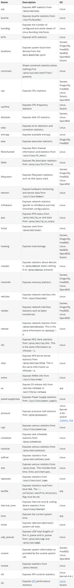
一般来说为了方便管理我们可以使用 docker 容器来运行 node_exporter，但是需要注意的是由于采集的是宿主机的指标信息，所以需要访问主机系统，如果使用 docker 容器来部署的话需要添加一些额外的参数来允许 node_exporter 访问宿主机的命名空间，如果直接在宿主机上运行的，我们可以用 systemd 来管理，创建一个如下所示的 service unit 文件：
☸ ➜ cat /etc/systemd/system/node_exporter.service
[Unit]
Description=node exporter service
Documentation=https://prometheus.io
After=network.target
[Service]
Type=simple
User=root
Group=root
ExecStart=/usr/local/bin/node_exporter # 有特殊需求的可以在后面指定参数配置
Restart=on-failure
[Install]
WantedBy=multi-user.target
然后就可以使用 systemd 来管理 node_exporter 了：
☸ ➜ cp node_exporter /usr/local/bin/node_exporter
☸ ➜ systemctl daemon-reload
☸ ➜ systemctl start node_exporter
☸ ➜ systemctl status node_exporter
● node_exporter.service - node exporter servoce
Loaded: loaded (/etc/systemd/system/node_exporter.service; disabled; vendor preset: disabled)
Active: active (running) since Thu 2021-10-14 15:29:46 CST; 5s ago
Docs: https://prometheus.io
Main PID: 18679 (node_exporter)
Tasks: 5
Memory: 6.5M
CGroup: /system.slice/node_exporter.service
└─18679 /usr/local/bin/node_exporter
Oct 14 15:29:46 node1 node_exporter[18679]: level=info ts=2021-10-14T07:29:46.137Z caller=node_exporter.go:..._zone
Oct 14 15:29:46 node1 node_exporter[18679]: level=info ts=2021-10-14T07:29:46.137Z caller=node_exporter.go:...=time
Oct 14 15:29:46 node1 node_exporter[18679]: level=info ts=2021-10-14T07:29:46.137Z caller=node_exporter.go:...timex
Oct 14 15:29:46 node1 node_exporter[18679]: level=info ts=2021-10-14T07:29:46.137Z caller=node_exporter.go:...ueues
Oct 14 15:29:46 node1 node_exporter[18679]: level=info ts=2021-10-14T07:29:46.137Z caller=node_exporter.go:...uname
Oct 14 15:29:46 node1 node_exporter[18679]: level=info ts=2021-10-14T07:29:46.137Z caller=node_exporter.go:...mstat
Oct 14 15:29:46 node1 node_exporter[18679]: level=info ts=2021-10-14T07:29:46.137Z caller=node_exporter.go:...r=xfs
Oct 14 15:29:46 node1 node_exporter[18679]: level=info ts=2021-10-14T07:29:46.137Z caller=node_exporter.go:...r=zfs
Oct 14 15:29:46 node1 node_exporter[18679]: level=info ts=2021-10-14T07:29:46.137Z caller=node_exporter.go:...:9100
Oct 14 15:29:46 node1 node_exporter[18679]: level=info ts=2021-10-14T07:29:46.137Z caller=tls_config.go:191...false
Hint: Some lines were ellipsized, use -l to show in full.
这里我们用 systemd 的方式在两个节点上（node1、node2）分别启动 node_exporter，启动完成后我们使用静态配置的方式在之前的 Prometheus 配置中新增一个 node_exporter 的抓取任务，来采集这两个节点的监控指标数据，配置文件如下所示：
global:
scrape_interval: 5s
scrape_configs:
- job_name: "prometheus"
static_configs:
- targets: ["localhost:9090"]
- job_name: "demo"
scrape_interval: 15s # 会覆盖global全局的配置
scrape_timeout: 10s
static_configs:
- targets: ["localhost:10000", "localhost:10001", "localhost:10002"]
- job_name: "node_exporter" # 新增 node_exporter 任务
static_configs:
- targets: ["node1:9100", "node2:9100"] # node1、node2 在 hosts 中做了映射
上面配置文件最后我们新增了一个名为 node_exporter 的抓取任务，采集的目标使用静态配置的方式进行配置，然后重新加载 Prometheus，正常在 Prometheus 的 WebUI 的目标页面就可以看到上面配置的 node_exporter 任务了。
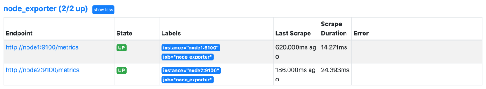
接下来我们来了解一些关于节点监控的常用指标，比如 CPU、内存、IO 监控等。
2 CPU 监控
对于节点我们首先能想到的就是要先对 CPU 进行监控，因为 CPU 是处理任务的核心，根据 CPU 的状态可以分析出当前系统的健康状态。要对节点进行 CPU 监控，需要用到 node_cpu_seconds_total 这个监控指标，在 metrics 接口中该指标内容如下所示：
# HELP node_cpu_seconds_total Seconds the CPUs spent in each mode.
# TYPE node_cpu_seconds_total counter
node_cpu_seconds_total{cpu="0",mode="idle"} 13172.76
node_cpu_seconds_total{cpu="0",mode="iowait"} 0.25
node_cpu_seconds_total{cpu="0",mode="irq"} 0
node_cpu_seconds_total{cpu="0",mode="nice"} 0.01
node_cpu_seconds_total{cpu="0",mode="softirq"} 87.99
node_cpu_seconds_total{cpu="0",mode="steal"} 0
node_cpu_seconds_total{cpu="0",mode="system"} 309.38
node_cpu_seconds_total{cpu="0",mode="user"} 79.93
node_cpu_seconds_total{cpu="1",mode="idle"} 13168.98
node_cpu_seconds_total{cpu="1",mode="iowait"} 0.27
node_cpu_seconds_total{cpu="1",mode="irq"} 0
node_cpu_seconds_total{cpu="1",mode="nice"} 0
node_cpu_seconds_total{cpu="1",mode="softirq"} 74.1
node_cpu_seconds_total{cpu="1",mode="steal"} 0
node_cpu_seconds_total{cpu="1",mode="system"} 314.71
node_cpu_seconds_total{cpu="1",mode="user"} 78.83
node_cpu_seconds_total{cpu="2",mode="idle"} 13182.78
node_cpu_seconds_total{cpu="2",mode="iowait"} 0.69
node_cpu_seconds_total{cpu="2",mode="irq"} 0
node_cpu_seconds_total{cpu="2",mode="nice"} 0
node_cpu_seconds_total{cpu="2",mode="softirq"} 66.01
node_cpu_seconds_total{cpu="2",mode="steal"} 0
node_cpu_seconds_total{cpu="2",mode="system"} 309.09
node_cpu_seconds_total{cpu="2",mode="user"} 79.44
node_cpu_seconds_total{cpu="3",mode="idle"} 13185.13
node_cpu_seconds_total{cpu="3",mode="iowait"} 0.18
node_cpu_seconds_total{cpu="3",mode="irq"} 0
node_cpu_seconds_total{cpu="3",mode="nice"} 0
node_cpu_seconds_total{cpu="3",mode="softirq"} 64.49
node_cpu_seconds_total{cpu="3",mode="steal"} 0
node_cpu_seconds_total{cpu="3",mode="system"} 305.86
node_cpu_seconds_total{cpu="3",mode="user"} 78.17
从接口中描述可以看出该指标是用来统计 CPU 每种模式下所花费的时间，是一个 Counter 类型的指标，也就是会一直增长，这个数值其实是 CPU 时间片的一个累积值，意思就是从操作系统启动起来 CPU 开始工作，就开始记录自己总共使用的时间，然后保存下来，而且这里的累积的 CPU 使用时间还会分成几个不同的模式，比如用户态使用时间、空闲时间、中断时间、内核态使用时间等等，也就是平时我们使用 top 命令查看的 CPU 的相关信息，而我们这里的这个指标会分别对这些模式进行记录。
接下来我们来对节点的 CPU 进行监控，我们也知道一个一直增长的 CPU 时间对我们意义不大，一般我们更希望监控的是节点的 CPU 使用率，也就是我们使用 top 命令看到的百分比。
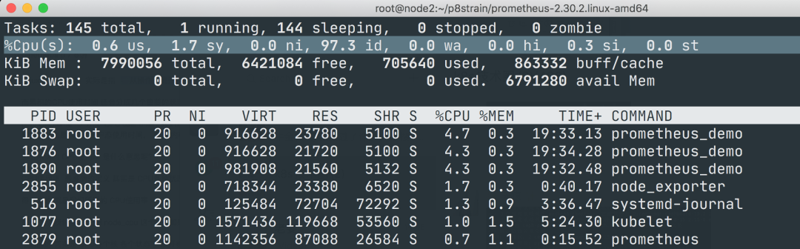
要计算 CPU 的使用率，那么就需要搞清楚这个使用率的含义，CPU 使用率是 CPU 除空闲（idle）状态之外的其他所有 CPU 状态的时间总和除以总的 CPU 时间得到的结果，理解了这个概念后就可以写出正确的 promql 查询语句了。
要计算除空闲状态之外的 CPU 时间总和，更好的方式是不是直接计算空闲状态的 CPU 时间使用率，然后用 1 减掉就是我们想要的结果了，所以首先我们先过滤 idle 模式的指标，在 Prometheus 的 WebUI 中输入 node_cpu_seconds_total{mode="idle"} 进行过滤：
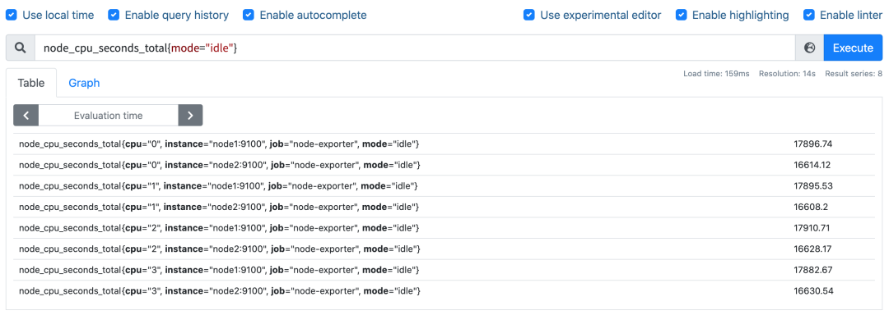
要计算使用率，肯定就需要知道 idle 模式的 CPU 用了多长时间，然后和总的进行对比，由于这是 Counter 指标，我们可以用 increase 函数来获取变化，使用查询语句 increase(node_cpu_seconds_total{mode="idle"}[1m])，因为 increase 函数要求输入一个区间向量，所以这里我们取 1 分钟内的数据：
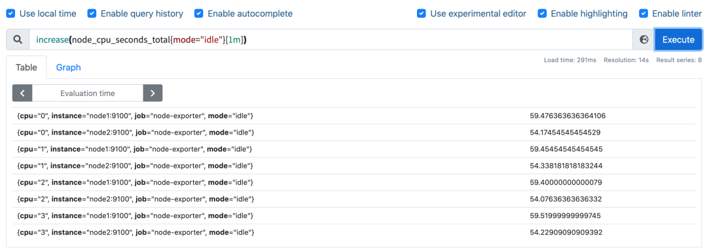
我们可以看到查询结果中有很多不同 cpu 序号的数据，我们当然需要计算所有 CPU 的时间，所以我们将它们聚合起来，我们要查询的是不同节点的 CPU 使用率，所以就需要根据 instance 标签进行聚合，
使用查询语句 sum(increase(node_cpu_seconds_total{mode="idle"}[1m])) by (instance)：
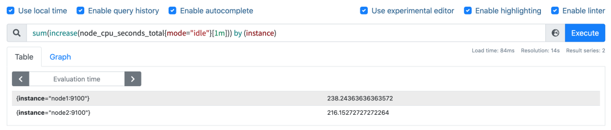
这样我们就分别拿到不同节点 1 分钟内的空闲 CPU 使用时间了，然后和总的 CPU （这个时候不需要过滤状态模式）时间进行比较即可，使用查询语句
sum(increase(node_cpu_seconds_total{mode="idle"}[1m])) by (instance) / sum(increase(node_cpu_seconds_total[1m])) by (instance)：
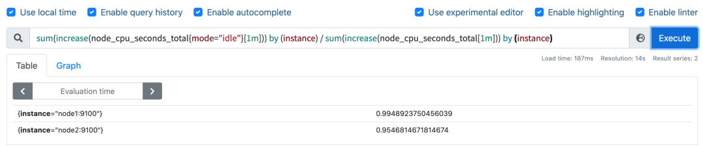
然后计算 CPU 使用率就非常简单了，使用 1 减去乘以 100 即可：
(1 - sum(increase(node_cpu_seconds_total{mode="idle"}[1m])) by (instance) / sum(increase(node_cpu_seconds_total[1m])) by (instance) ) * 100
这就是能够想到的最直接的 CPU 使用率查询方式了，当然前面我们学习的 promql 语法中提到过更多的时候我们会去使用 rate 函数，而不是用 increase 函数进行计算，所以最终的 CPU 使用率的查询语句为：
(1 - sum(increase(node_cpu_seconds_total{mode="idle"}[1m])) by (instance) / sum(increase(node_cpu_seconds_total[1m])) by (instance) ) * 100
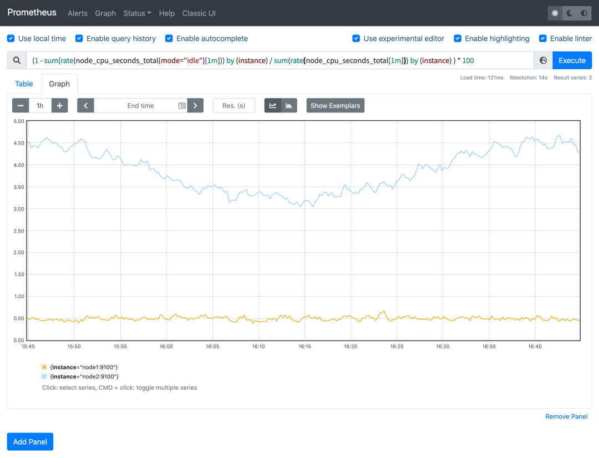
可以和 top 命令的结果进行对比（下图为 node2 节点），基本上是保持一致的，这就是监控节点 CPU 使用率的方式。
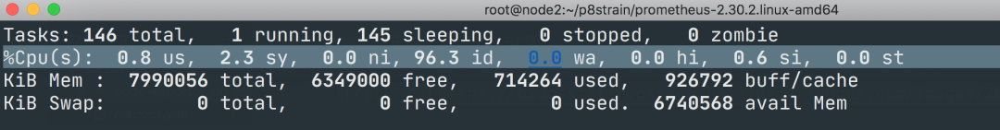
3 内存监控
除了 CPU 监控之外，我们可能最关心的就是节点内存的监控了，平时我们查看节点的内存使用情况基本上都是使用 free 命令来查看：
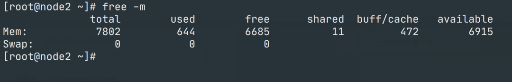
3-1 free命令
free 命令的输出会显示系统内存的使用情况，包括物理内存、交换内存(swap)和内核缓冲区内存等，所以要对内存进行监控我们需要先了解这些概念，我们先了解下 free 命令的输出内容：
- Mem 行(第二行)是内存的使用情况
- Swap 行(第三行)是交换空间的使用情况
- total 列显示系统总的可用物理内存和交换空间大小
- used 列显示已经被使用的物理内存和交换空间
- free 列显示还有多少物理内存和交换空间可用使用
- shared 列显示被共享使用的物理内存大小
- buff/cache 列显示被 buffer 和 cache 使用的物理内存大小
- available 列显示还可以被应用程序使用的物理内存大小
其中我们需要重点关注的 free 和 available 两列。
free 是真正尚未被使用的物理内存数量，而 available 是从应用程序的角度看到的可用内存，Linux 内核为了提升磁盘操作的性能，会消耗一部分内存去缓存磁盘数据，就是 buffer 和 cache，所以对于内核来说，buffer 和 cache 都属于已经被使用的内存，只是应用程序需要内存时，如果没有足够的 free 内存可以用，内核就会从 buffer 和 cache 中回收内存来满足应用程序的请求。所以从应用程序的角度来说 available = free + buffer + cache，不过需要注意这只是一个理想的计算方式，实际中的数据有较大的误差。
如果要在 Prometheus 中来查询内存使用，则可以用 node_memory_* 相关指标，同样的要计算使用的，我们可以计算可使用的内存，使用 promql 查询语句 node_memory_Buffers_bytes + node_memory_Cached_bytes + node_memory_MemFree_bytes。
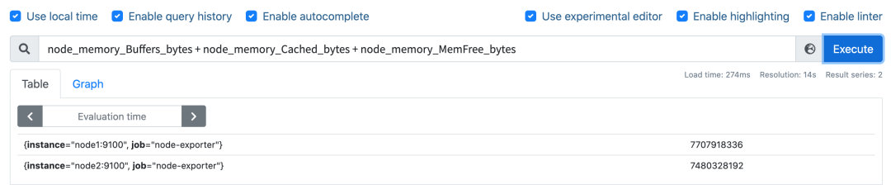
然后计算可用内存的使用率，和总的内存相除，然后同样用 1 减去即可，语句为
(1- (node_memory_Buffers_bytes + node_memory_Cached_bytes + node_memory_MemFree_bytes) / node_memory_MemTotal_bytes) * 100，
这样计算出来的就是节点内存使用率。
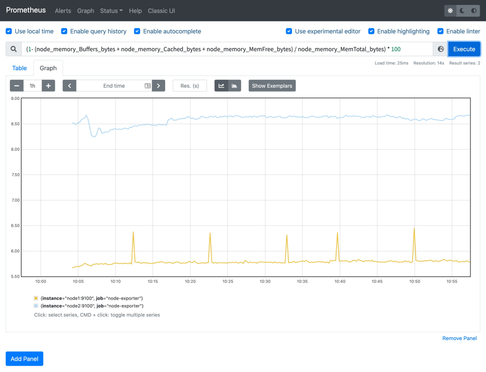
当然如果想要查看各项内存使用直接使用对应的监控指标即可，比如要查看节点总内存，直接使用 node_memory_MemTotal_bytes 指标即可获取。
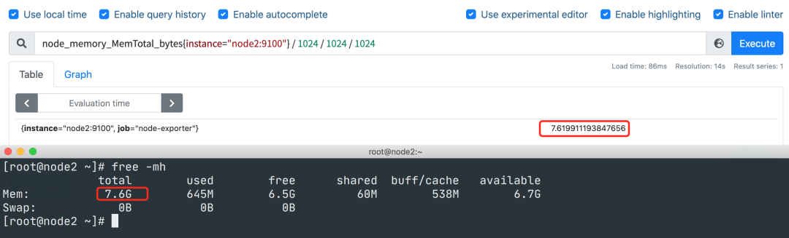
4 磁盘监控
接下来是比较中的磁盘监控，对于磁盘监控我们不仅对磁盘使用情况感兴趣，一般来说对于磁盘 IO 的监控也是非常有必要的。
磁盘容量监控
要监控磁盘容量，需要用到 node_filesystem_* 相关的指标，比如要查询节点磁盘空间使用率，则可以同样用总的减去可用的来进行计算，磁盘可用空间使用 node_filesystem_avail_bytes 指标，但是由于会有一些我们不关心的磁盘信息，所以我们可以使用 fstype 标签过滤关心的磁盘信息，比如 ext4 或者 xfs 格式的磁盘：
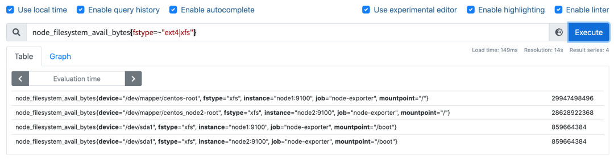
要查询磁盘空间使用率，则使用查询语句
(1 - node_filesystem_avail_bytes{fstype=~"ext4|xfs"} / node_filesystem_size_bytes{fstype=~"ext4|xfs"}) * 100
即可：
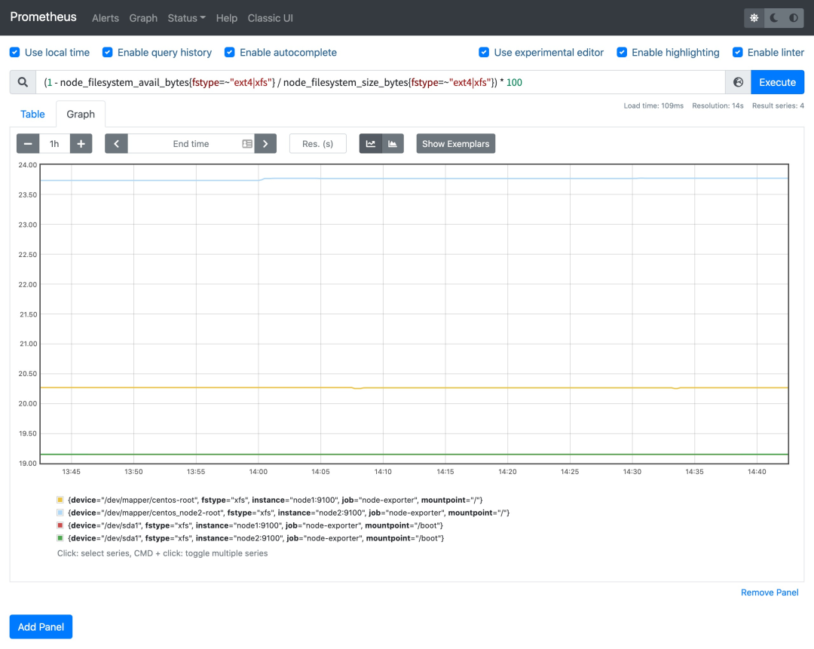
这样就可以得到我们关心的磁盘空间使用率了。
磁盘 IO 监控
要监控磁盘 IO，就要区分是读的 IO，还是写的 IO，读 IO 使用 node_disk_reads_completed 指标，写 IO 使用 node_disk_writes_completed_total 指标。
磁盘读 IO 使用 sum by (instance) (rate(node_disk_reads_completed_total[5m])) 查询语句即可：
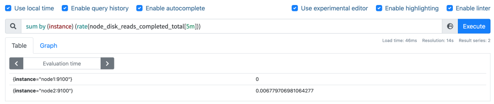
当然如果你想根据 device 进行聚合也是可以的，我们这里是全部聚合在一起了。
磁盘写 IO 使用 sum by (instance) (rate(node_disk_writes_completed_total[5m])) 查询语句即可：
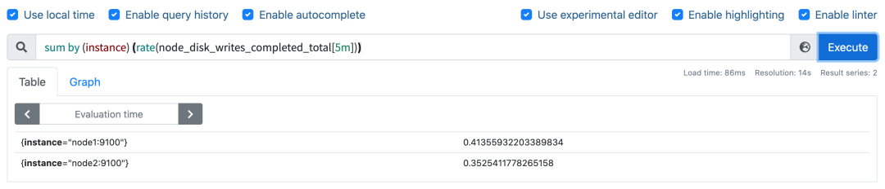
6 网络 IO 监控
上行带宽需要用到的指标是 node_network_receive_bytes，由于我们对网络带宽的瞬时变化比较关注，所以一般我们会使用 irate 函数来计算网络 IO，比如计算上行带宽用查询语句
sum by(instance) (irate(node_network_receive_bytes_total{device!~"bond.*?|lo"}[5m]))
即可：
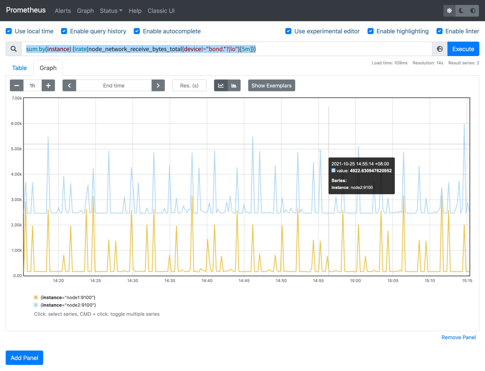
下行带宽用到的指标为 node_network_transmit_bytes，同样的方式查询语句为
sum by(instance) (irate(node_network_transmit_bytes{device!~"bond.*?|lo"}[5m]))：
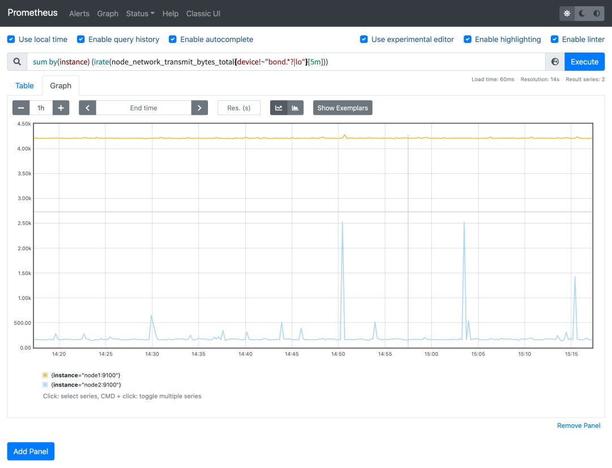
当然我们还可以根据网卡设备进行分别聚合计算，最后还可以根据自己的需求将结果进行单位换算。